Escolha a dificuldade. Complete a caçada.
No Task Board, a aba Bounty Tasks reúne as tasks de caça. Selecione a dificuldade em Task Difficulty, confira os objetivos e as recompensas e use Select Task para escolher sua task.
- Escolha sua task
Confira a criatura e a quantidade de abates exigida no painel.
- Conclua o objetivo
Acompanhe o progresso da task e continue completando as caçadas da dificuldade.
- Libere novas recompensas
Ao completar todas as tasks exigidas em uma dificuldade, você pode pegar o baú correspondente.
Complete a dificuldade e resgate seu baú
Cada baú exige concluir completamente as Bounty Tasks da sua dificuldade. Confira as metas e todas as recompensas abaixo.
DificuldadeBeginner30tasks concluídas
Conclua 30 Bounty Tasks na dificuldade Beginner para liberar este baú.
Recompensas do baú
Amplification
- 5×
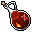
Fire Amplification - 5×
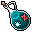
Ice Amplification - 5×
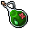
Earth Amplification - 5×
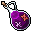
Energy Amplification - 5×
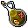
Holy Amplification - 5×
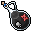
Death Amplification - 5×
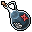
Physical Amplification
Resilience
- 5×
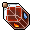
Fire Resilience - 5×
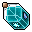
Ice Resilience - 5×
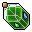
Earth Resilience - 5×
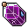
Energy Resilience - 5×
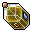
Holy Resilience - 5×
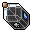
Death Resilience - 5×
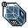
Physical Resilience
Itens e utilidades
- 25×
 More Points Wheel
More Points Wheel - 5×
 5× Prey Wildcards (pacote de 5)
5× Prey Wildcards (pacote de 5) - 4×
 Mistery Lasting Exercise
Mistery Lasting Exercise - 3×
 Roulette Token
Roulette Token - 1×
 Addon Box
Addon Box - 1×
 Mount Box
Mount Box - 1×Elemental Stones Bag
- 1×
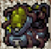
Poison Backpack
- OutfitElemental Citizen (Earth)
DificuldadeAdept60tasks concluídas
Conclua 60 Bounty Tasks na dificuldade Adept para liberar este baú.
Recompensas do baú
Amplification
- 10×Fire Amplification
- 10×Ice Amplification
- 10×Earth Amplification
- 10×Energy Amplification
- 10×Holy Amplification
- 10×Death Amplification
- 10×Physical Amplification
Resilience
- 10×Fire Resilience
- 10×Ice Resilience
- 10×Earth Resilience
- 10×Energy Resilience
- 10×Holy Resilience
- 10×Death Resilience
- 10×Physical Resilience
Itens e utilidades
- 35×More Points Wheel
- 2×Exercise Elixir (3h)
- 6×
 10× Prey Wildcards (pacote de 10)
10× Prey Wildcards (pacote de 10) - 6×
 Upgrade Stone Lvl 1
Upgrade Stone Lvl 1 - 5×Roulette Token
- 5×Addon Box
- 5×Mount Box
- 2×Elemental Stones Bag
- 4×
 Mistery Mystic Exercise
Mistery Mystic Exercise - 1×N’zoth Backpack
- OutfitElemental Citizen (Energy)
DificuldadeExpert90tasks concluídas
Conclua 90 Bounty Tasks na dificuldade Expert para liberar este baú.
Recompensas do baú
Amplification
- 20×Fire Amplification
- 20×Ice Amplification
- 20×Earth Amplification
- 20×Energy Amplification
- 20×Holy Amplification
- 20×Death Amplification
- 20×Physical Amplification
Resilience
- 20×Fire Resilience
- 20×Ice Resilience
- 20×Earth Resilience
- 20×Energy Resilience
- 20×Holy Resilience
- 20×Death Resilience
- 20×Physical Resilience
Itens e utilidades
- 50×More Points Wheel
- 4×Exercise Elixir (3h)
- 10×10× Prey Wildcards (pacote de 10)
- 6×
 Upgrade Stone Lvl 2
Upgrade Stone Lvl 2 - 8×Roulette Token
- 10×Addon Box
- 10×Mount Box
- 6×Mistery Mystic Exercise
- 5×
 Mistery Bag
Mistery Bag - 4×
 Stamina Bottle
Stamina Bottle - 3×Elemental Stones Bag
- 1×
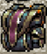
Corrupted Backpack
- OutfitElemental Citizen (Fire)
- OutfitElemental Citizen (Ice)
- MontariaGhost Draptor
DificuldadeMaster120tasks concluídas
Conclua 120 Bounty Tasks na dificuldade Master para liberar este baú.
Recompensas do baú
Amplification
- 25×Fire Amplification
- 25×Ice Amplification
- 25×Earth Amplification
- 25×Energy Amplification
- 25×Holy Amplification
- 25×Death Amplification
- 25×Physical Amplification
Resilience
- 25×Fire Resilience
- 25×Ice Resilience
- 25×Earth Resilience
- 25×Energy Resilience
- 25×Holy Resilience
- 25×Death Resilience
- 25×Physical Resilience
Itens e utilidades
- 100×More Points Wheel
- 6×Exercise Elixir (3h)
- 15×10× Prey Wildcards (pacote de 10)
- 6×Upgrade Stone Lvl 2
- 10×Roulette Token
- 10×Addon Box
- 10×Mount Box
- 6×
 Mistery Legendary Exercise
Mistery Legendary Exercise - 10×Mistery Bag
- 5×Elemental Stones Bag
- 4×Stamina Bottle
- 1×
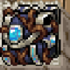
Lothlorien Backpack
- OutfitElemental Citizen (Holy)
- OutfitElemental Citizen (Death)
- MontariaFierce Draptor
Nos Prey Wildcards, a quantidade indica o número de pacotes: 5× pacotes de 5 = 25 cards; 6×, 10× e 15× pacotes de 10 = 60, 100 e 150 cards, respectivamente.
Suas tasks também desbloqueiam poder
Conforme conclui as tasks, você pode liberar e evoluir os bônus do Bounty Talisman. Eles aparecem na parte inferior da aba Bounty Tasks, com o valor atual, o próximo upgrade e seu custo.
Damage Against Creatures
Bônus de dano contra criaturas.
No print: 2,5% → 3,0%Life Leech
Bônus de roubo de vida.
No print: 2,5% → 3,0%More Loot
Bônus para obter mais loot.
No print: 2,5% → 3,0%Chance for Double Bestiary Progress
Chance de progresso dobrado no Bestiary.
No print: 5,0% → 6,0%Os valores acima são o exemplo exibido no painel enviado. Consulte o botão Upgrade no jogo para conferir seu próximo bônus e custo.
Objetivos semanais, novas possibilidades
Na aba Weekly Tasks, conclua as tasks semanais para ganhar os pontos que podem ser trocados por bônus, outfits e montarias na Hunting Task Shop.
Derrote criaturas
Complete a quantidade de abates indicada em cada objetivo semanal.
Entregue os materiais
Reúna os itens e as quantidades solicitadas e use Deliver para entregá-los.
A seção Weekly Progress mostra sua evolução e os multiplicadores de recompensa. Mais tasks concluídas permitem avançar nesse progresso.
Troque suas conquistas por recompensas
Abra a aba Hunting Task Shop do Task Board para trocar os pontos conquistados nas Weekly Tasks por bônus, outfits e montarias.
Praticamente todas as montarias e outfits da Store do jogo podem ser conquistados de forma totalmente FREE pelo sistema de tasks. Complete as tasks, acumule pontos e escolha suas recompensas na Shop.
Os prints abaixo mostram apenas alguns exemplos. Explore a Hunting Task Shop no jogo para conhecer todas as opções disponíveis.
Bônus, utilidades e outfits
Montarias
Use !outfitbonus para acessar Cosmetic Mastery e converter os pontos da sua coleção em bônus. Consulte os atributos e limites no guia Outfit & Mount Bônus.